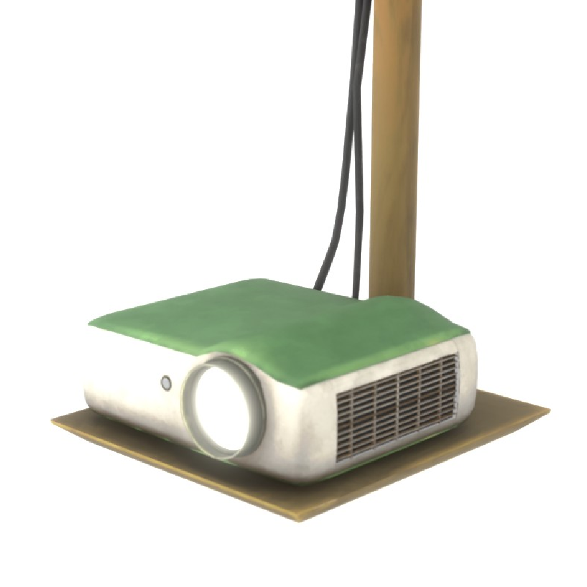
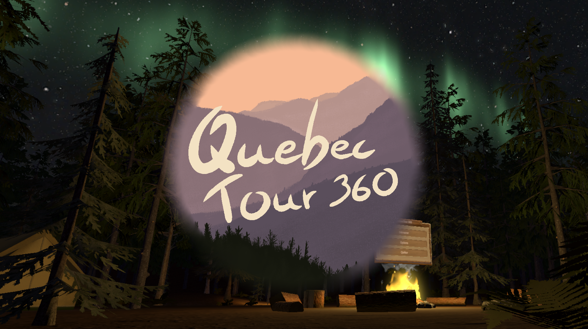

Une sélection de projets récents. La galerie s'enrichit au fil des productions.

Prop optimisé pour moteur temps réel, livré avec fichiers sources et textures PBR complètes.

Modélisation d'un environnement complet pour une application VR

Création de shaders dans Unity et intégration des assets modélisés pour une utilisation directe.

Application de visite virtuelle du Québec : création de l'environnement 3D, organisation et retouche des photos 360° et 2D, mise en place des interactions.